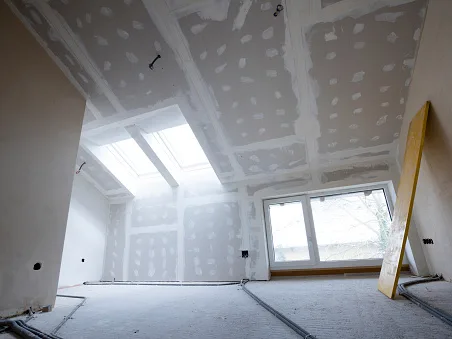
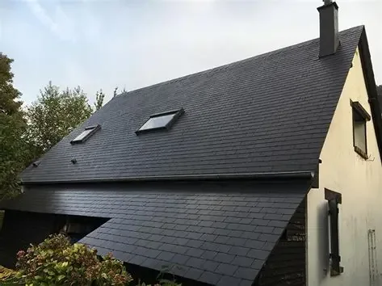
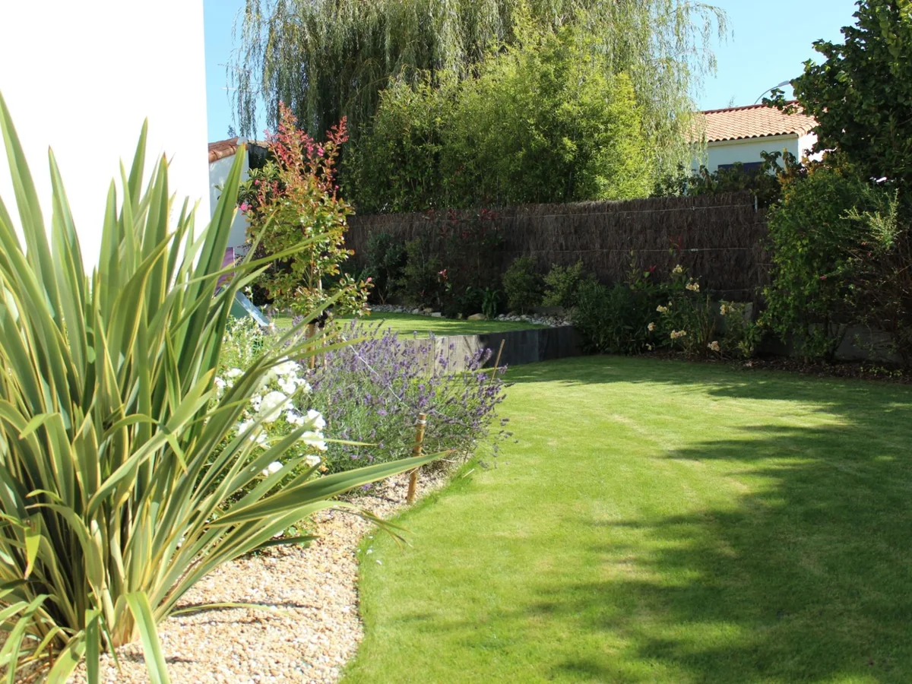

01 · Intérieur
Rénovation intérieure
Rénovez votre intérieur, pièce par pièce, avec des finitions soignées.
- Placo et cloisons
- Enduit
- Mise en peinture
- Pose de parquet
- Pose de carrelage
- Pose de cuisine équipée
- Montage de meubles

02 · Extérieur
Rénovation extérieure
Redonnez de l'éclat à votre toiture, à votre façade et à vos extérieurs.
- Rénovation de toiture
- Mise en peinture de toiture
- Démoussage de toiture
- Nettoyage de façade
- Nettoyage extérieur

03 · Extérieur
Espaces verts
Un jardin entretenu et mis en valeur, toute l'année.
- Taille de haies
- Taille de massifs
- Entretien extérieur
04 · Complémentaire
Services complémentaires
Pour compléter votre chantier ou libérer votre logement.
- Débarras de maison et d'appartement
- Évacuation des déchets en déchetterie
Un projet de rénovation ?
Décrivez-nous vos travaux, nous vous répondons rapidement avec un devis gratuit.